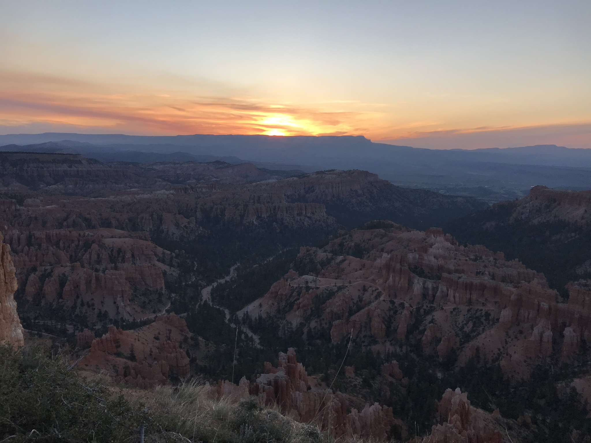

-
Wat Chom Si, Luang Prabang, Laos (2017)
-
High Peaks Wilderness, Adirondak Mountains, New York (2018)
-
Loha Prasat, Bangkok, Thailand (2017)
-

West Coast, South Island, New Zealand (2017)
-
Dumbo, Brooklyn, New York (2018)
-
Crows, Pittsburgh, Pennsylvania (2018)
-
Moon over Manhattan, New York, New York (2020)
-
Susquehanna River, Delaware (2019)
-
English Bay, Vancouver, British Columbia (2019)
-

Matukituki Valley, South Island, New Zealand (2017)
-

Manly Beach, Sydney, Australia (2017)
-
Big Buddha Trail, Hong Kong (2017)
-
Clay Figurines, Tel Aviv, Israel (2015)
-

Sunrise, Bryce Canyon National Park, Utah (2020)
-
Teddy Hits Rock Bottom, San Fransisco, CA (2019)
-
Milford Sound, South Island, New Zealand (2017)
-
Boats on the Mekong, Luang Prabang, Laos (2017)
-
Sunrise, Outback, Australia (2017)
-
Blue Mosque, Istanbul, Turkey (2014)
-
Pancake Rocks, South Island, New Zealand (2017)
-

El Capitan, Yosemite National Park, CA (2019)
-
Children Releasing Lanterns, Mae Hong Son, Thailand (2017)

Raanan Gurewitsch
Pronounced RAH-AH-NON GRR-WITCHConducted geospatial data analysis and collection for studies of household lead water contamination as well as Radon exposure and lung cancer mortality in SW Pennsylvania.
Designed and prototyped new web interface and developed API documentation for Mortality Information and Research Analytics system, which allows for generation of mortality rates for any cause of death in the United States between 1950 and 2017.

Civic Digital Fellowship - 3rd Cohort
Built OpenStreetMap machine learning pipeline, which replicates the functionality of existing APIs, allowing Census analysts to gather location-specific statistics on roads, buildings, land use while protecting the private information of survey respondents.
The OpenStreetMap data is used to train random forest classifier to identify survey respondents with a low likelihood of reporting commodity shipments, which helps optimize business sampling for the US Commodity Flow Survey.

Developed a City-wide software inventory analysis to inform software procurement strategy based on software utilization data from over 1,000 on-premise computers and ‘capabilities mapping’ sessions with clients from all City departments.
Developed business cases and gathered technical requirements for large-scale digital transformations and upgrades such as timekeeping and scheduling (identified over $2 million in potential annual savings) and Windows 10 rollout.
Bachelor of Philosophy in Information Science, University of Pittsburgh

Coursework in data analytics, GIS and public health
Geoinformatics Laboratory
9 credits of graduate coursework in Spatial Data Analytics and independent study in geoinformatics. (See Publications)

Bachelor of Philosophy Program
The Bachelor of Philosophy is a research-based degree offered by the University Honors College, the highest undergraduate distinction at the University of Pittsburgh.
Thesis: Pb-predict: Using Machine Learning to Locate Lead Plumbing in a Large Public Water System
Community Research Fellowship
The CRF is a trans-disciplinary, experiential learning program meant to engage students with curriculum concepts to create a socially responsible, mutually beneficial exchange of knowledge and resources with their community partners.
Mapping the Risk Factors for Inadequate Prenatal Care, Fall 2018 - Spring 2019 - JFCSMapping Pittsburgh's Lead Problem, Summer 2017 - Women for a Healthy Environment
Dean's Award, Spring 2018

Studio Founder and President
DFA is a national network of campus studios where students engage with user-centered design through projects focused on creating positive social impact.
Team Leader, The H2infO Initiative
The H2infO Initiative was a partnership between DFA, Epsilon Eta and Pitt Analytical Chemistry Department to provide free tap water testing for Pitt students in off-campus housing with old lead plumbing. Volunteers signed up over 100 community members for the City of Pittsburgh's Safe Water Program, collected samples from and distributed free water filters to over 40 students.
3rd Prize ($3,000) Randall Family Big Idea Competition 2017
Research Intern, University of Sydney Business School
Collected structured and unstructured data from Angel.co, Crunchbase and LinkedIn to analyze the business models and founding teams of healthcare AI startups.

Israel Summer Business Academy, Washington University in St. Louis
Six week, six credit program included coursework on Israeli innovation ecosystem and venture creation at Interdisciplinary College Herzliya, as well as visits to Israeli venture capital firms and technology companies in cyber-security and artificial intelligence.

Year Course is an academic and volunteering based gap year program, including 12 credits of coursework in Modern Hebrew, Jewish Art, Comparative Religions and History of Zionism, Israel and Palestine.
Volunteered as first responder for Magen David Adom (Israeli national ambulance service).
M. Maleki, et al., “A Mixture of Regression Models of COVID-19 Death Rates and Population Comorbidities.” July 2020. Statistics and Applications.
{kind=link}
S. Pyne, et al., “Transition from Social Vulnerability to Resiliency vis-à-vis Covid-19.” June 2020. Statistics and Applications.
{kind=link}
B. Wheeler, et al., “Personalized Accessible Wayfinding for People with Disabilities through Standards and Open Geospatial Platforms in Smart Cities.” Accepted 2020. Open Geospatial Data, Software and Standards.
{kind=link}
“Spatial Modeling of Lead Contamination Risk in Local Communities of Pittsburgh, PA”. American Public Health Association Annual Meeting and Expo. Oct. 2020. (VIRTUAL). Student Achievement Award for Excellence in Environmental Justice Track.
“Applications of Geoinformatics to Mortality and Environmental Data.” Public Health Dynamics Laboratory Seminar Series. Mar. 2020. Pittsburgh, PA, USA.
“How Machine Learning Can Solve America’s Lead Crisis.” Ecocity World Summit. Oct. 2019. Vancouver, BC, CA.
{kind=link}
“Pb-Predict: Using Machine Learning to Locate Lead Plumbing in a Large Public Water System.” Mid-Atlantic Undergraduate Research Conference. Mar. 2019. Virginia Tech University. VA, USA.
Clients:
Developing computational models to locate likely lead water service line locations in Toledo, Ohio, among other cities in the United States and Canada. Insights from ActiveRemediation model guide municipal water utilities as they replace thousands of lead pipes within their service areas.
Maintaining web scraping and other data collection scripts, including quarterly collection of the entire Safe Drinking Water Information System (EPA) to track violations of the Lead and Copper Rule and other EPA regulations.